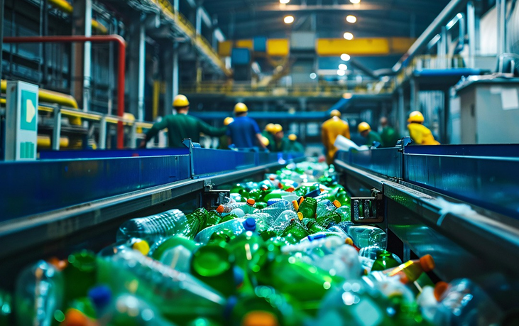
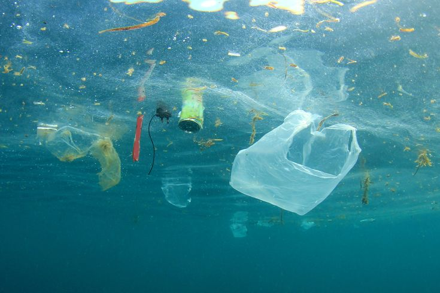

Mission
Vores Værdier
Hos JuicOrganic tror vi på, at vores produkt ikke bare skal smage godt – det skal også gøre godt. Derfor har vi valgt at støtte konkrete løsninger på verdens miljøproblemer.
Vi har valgt den hollandske non-profit organisation The Ocean Cleanup som samarbejdspartner, fordi deres arbejde er konkret, målbart og visionært. De udvikler avanceret teknologi til at fjerne plastik fra verdenshavene – og gør det i stor skala.
VIDSTE DU AT
Danmark er et af de lande, der bruger flest biologiske ressourcer...
Kilde: Overshoot Day
"...både glas, pap, papir og metal er lettere at genanvende end plastik...” Kilde: Plastic Change
Kun 23% af Danmarks plastik bliver genanvendt (ikke det samme som genbrugt - der mangler info på dette) Kilde: Miljøministeriet, statistik 2021
"Det meste sendes til Tyskland, hvorfra vi ingen kontrol eller viden har om dets videre færden" Kilde: Plastic Change
Konkrete Mål
For hver JuicOrganic-karton, du køber, donerer vi 15% direkte til The Ocean Cleanup. Det svarer til fjernelsen af cirka 9 plastikflasker fra miljøet. Jo flere kartoner der sælges, jo større forskel gør vi. Vi tror på gennemsigtighed. Derfor opdaterer vi løbende vores indsats her på siden.